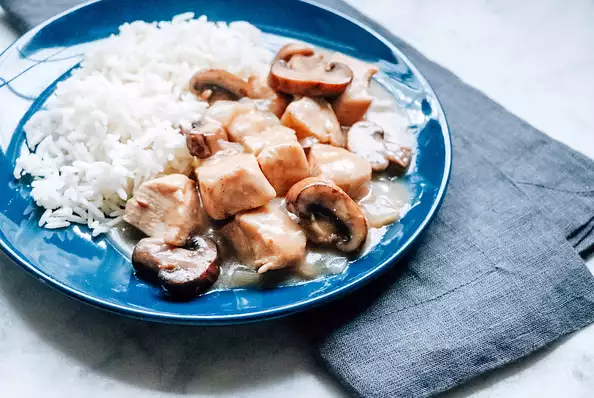

Chicken Marsala

Description
An easy 20-minute, delicious, and creamy chicken marsala! Serve over whole wheat pasta or brown rice.
Ingredients
- 3 tablespoons olive oil
- salt and ground black pepper to taste
- 2 skinless, boneless chicken breasts, cut into cubes
- 1 onion, diced
- 1 cup sliced cremini mushrooms
- 1 (10.75 ounce) can condensed cream of mushroom soup
- 1 cup Marsala wine
Steps
- Heat olive oil in a skillet over medium-high heat. Season chicken with salt and pepper; cook in hot oil until browned, 3 to 5 minutes. Stir onion and mushrooms with the chicken; continue cooking until the onion is translucent, 5 to 7 minutes. Pour cream of mushroom soup and Marsala wine over the chicken mixture; cook until hot and the chicken is no longer pink in the middle, 3 to 5 minutes.